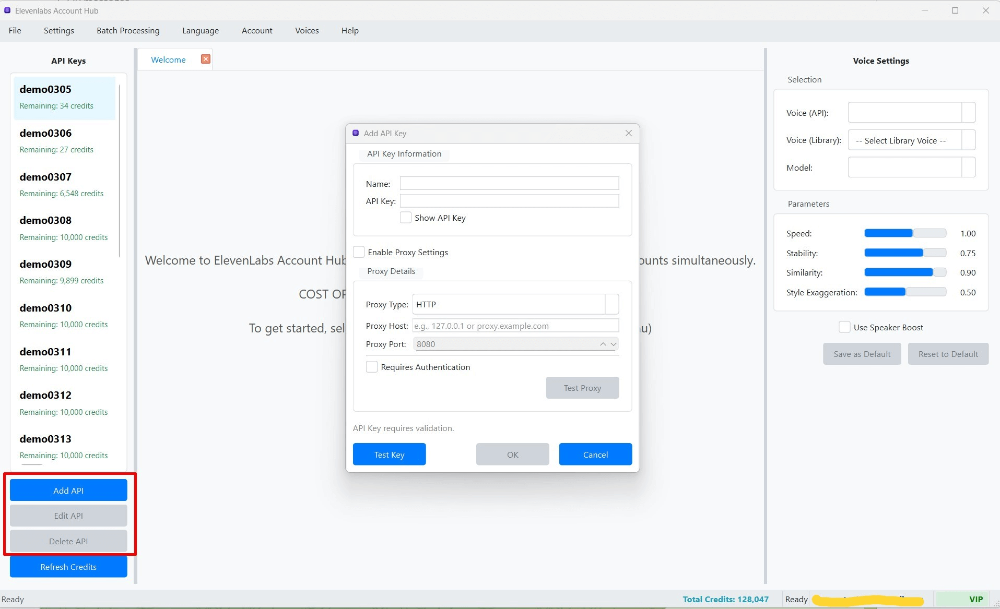

Thêm, Sửa và Xóa Khóa API
Thêm Khóa API Mới
Bạn có thể thêm nhiều khóa API ElevenLabs vào phần mềm để quản lý tập trung. Mỗi khóa API sẽ có hồ sơ cài đặt TTS và lịch sử riêng.
- Trong Cột Trái (Danh sách Khóa API), nhấn nút "Thêm Key" .
- Hoặc, bạn có thể vào menu "File" > "Thêm Khóa API".
- Cửa sổ "Quản lý Khóa API" sẽ xuất hiện.  (Hình ảnh minh họa cửa sổ Quản lý Khóa API khi thêm mới)
- Điền các thông tin sau:
- Tên Key (Name): Đặt một tên gợi nhớ cho khóa API này (ví dụ: "Tài khoản A", "Dự án X"). Tên này phải là duy nhất.
- Khóa API (API Key): Dán giá trị khóa API của bạn từ trang web ElevenLabs.
-
Kiểm tra Key và Lấy Thông tin (Test Key & Fetch Info):
- Sau khi điền Tên Key và Khóa API, nhấn nút "Test Key & Fetch Info".
- Phần mềm sẽ kết nối đến ElevenLabs để kiểm tra tính hợp lệ của khóa và tự động lấy thông tin về số ký tự đã sử dụng (Character Count) và giới hạn ký tự (Character Limit) của tài khoản tương ứng.
- Nếu khóa hợp lệ, các trường "Character Count" và "Character Limit" sẽ được tự động điền. Một thông báo thành công sẽ hiển thị.
- Nếu khóa không hợp lệ hoặc có lỗi kết nối, một thông báo lỗi sẽ xuất hiện. Hãy kiểm tra lại khóa API và kết nối mạng của bạn.
Mẹo: Luôn nhấn "Test Key & Fetch Info" sau khi nhập khóa API để đảm bảo khóa hoạt động và thông tin tín dụng được cập nhật chính xác. - Cấu hình Proxy (Tùy chọn): Xem chi tiết tại Cấu hình Proxy cho Khóa API.
- Nhấn "Lưu" (Save) để thêm khóa API vào danh sách.
Chỉnh sửa Khóa API
Bạn có thể chỉnh sửa thông tin của một khóa API đã lưu, bao gồm tên, giá trị khóa, hoặc cấu hình proxy.
- Trong Cột Trái, chọn khóa API bạn muốn chỉnh sửa từ danh sách.
- Nhấn nút "Sửa Key" ở phía dưới danh sách.
- Cửa sổ "Quản lý Khóa API" sẽ xuất hiện, hiển thị thông tin hiện tại của khóa đã chọn.
- Thay đổi các thông tin cần thiết (Tên Key, Khóa API, thông tin Proxy).
- Nếu bạn thay đổi giá trị Khóa API, hãy nhấn lại nút "Test Key & Fetch Info" để cập nhật thông tin tín dụng.
- Nhấn "Lưu" (Save) để lưu các thay đổi.
Xóa Khóa API
Bạn có thể xóa một hoặc tất cả các khóa API khỏi phần mềm.
Xóa một Khóa API
- Trong Cột Trái, chọn khóa API bạn muốn xóa.
- Nhấn nút "Xóa Key" ở phía dưới danh sách.
- Hoặc, bạn có thể vào menu "File" > "Xóa Khóa API" (đảm bảo khóa đã được chọn trong danh sách).
- Một hộp thoại xác nhận sẽ xuất hiện. Nhấn "Yes" để xác nhận xóa.
Cảnh báo: Việc xóa khóa API sẽ xóa cả hồ sơ cài đặt và lịch sử TTS liên quan đến khóa đó trong phần mềm. Hành động này không thể hoàn tác.
Xóa Tất cả Khóa API
- Vào menu "File" > "Xóa Tất cả Khóa API".
- Một hộp thoại xác nhận sẽ xuất hiện. Nhấn "Yes" để xác nhận xóa tất cả các khóa API.
Cảnh báo: Hành động này sẽ xóa TOÀN BỘ các khóa API, hồ sơ cài đặt và lịch sử TTS đã lưu trong phần mềm. Hãy cân nhắc kỹ trước khi thực hiện.